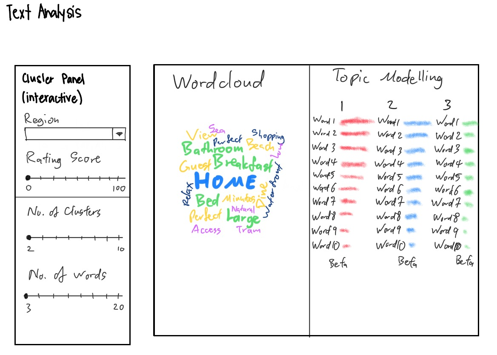

This assignment is about the text and sentiment analysis module of the visual analytics project.
This assignment is part of the bigger Shiny-based Visual Analytics Application (Shiny-VAA) project. Each team member is required to select a sub-module from the proposed Shiny-VAA and to complete the tasks below:
Airbnb is an online marketplace platform for accomodation rental. Founded in 2008 by Brian Chesky and Joe Gebbia who put an air mattress in their living room and offering a bed & breakfast service (thus “Airbnb”), Airbnb has grown to be one of the most popular short-term accomodation rental platforms in multiple countries around the world.
With millions of listings in 220 countries and over 100,000 cities, Airbnb has a rich store of data from transactions between hosts and guests. Such data include structured data such as price, number of facilities (e.g. bedrooms, bathrooms), minimum and maximum number of nights’ stay; and unstructured data such as description of the accommodation, and reviews by guests.
This assignment focuses on analysis of unstructured data from Airbnb’s online marketplace.
Multiple attempts on text and semtiment analysis has been done on Airbnb data sets using analysis tools such as SAS Enterprise Miner, Python, and others. A large number of practitioners prefer to perform text analysis in Python using tools like VADER (Valence Aware Dictionary and sEntiment Reasoner) for sentiment analysis, while R is commonly deemed to be more suitable for data analysis.
Test analytics on Airbnb data typically consists of analysing user reviews to understand the correlation between words and phrases used in the reviews versus the rating given to the accomodation. Such analysis can reveal what kind of accomodation, facilities, and service standard guests expect from their accommodation and their hosts, what would be considered ‘good’ or ‘bad’, thus leading to a high or low rating.
This assignment attempts to conduct text and sentiment analysis on the host’s description of the accommodation rather than the guest’s review of their experience, and how that might correlate to a high or low rating. This perspective places greater emphasis on the host to emphasize the accommodation’s strengths and unique features.
Some examples of other text and sentiment analysis done on Airbnb data are as listed: 1. Sentiment Analysis of Airbnb Boston Listing Reviews 2. AirBNB Data Analysis 3. Text analysis and Sentiment analysis of AirBnb Users’ reviews using SAS Enterprise Miner 4. Airbnb Price Prediction: Data Analysis with Python | Making Models (I)
This assignment attempts to create a visualisation of text and sentiment analysis of the accommodation’s descriptipn. The visualisation will allow the analyst to manipulate variables such as region in Australia, review score, number of topics.

packages = c('tidyverse', 'stringr', 'dplyr', 'lubridate', 'anytime', 'shiny',
'shinydashboard', 'plotly', 'corrplot', 'heatmaply', 'tidytext', 'tm',
'SnowballC', 'wordcloud', 'topicmodels')
for (p in packages){
if(!require(p, character.only = T)){
install.packages(p)
}
library(p, character.only = T)
}
airbnb_raw <- read_csv("data/listings.csv")
Many of the columns are not relevant to the analysis. As such, only columns relevant to the analysis are selected.
airbnb <- select(airbnb_raw, c(1, 6, 7, 8, 10, 13, 14, 15, 16, 17, 18, 19, 23, 24, 25,
26, 27, 28, 29, 30, 31, 32, 33, 35, 36, 37, 38, 39, 40,
41, 42, 43, 44, 45, 46, 47, 49, 50, 51, 52, 53, 55, 56,
57, 58, 59, 60, 61, 62, 63, 64, 65, 66, 68, 69, 70, 71,
72, 73, 74, 75, 76, 77, 80))
airbnb$host_response_rate <-
((as.numeric(str_remove_all(airbnb$host_response_rate, "%")))/100)
airbnb$host_acceptance_rate <-
((as.numeric(str_remove_all(airbnb$host_acceptance_rate, "%")))/100)
airbnb$price <- as.numeric(gsub("\\$","", airbnb$price))
airbnb$host_response_time <- na_if(airbnb$host_response_time, "N/A")
write.csv(airbnb, "data/Airbnb.csv")
#Load Data
airbnb <- read_csv("data/Airbnb_victoria.csv")
#Shiny app will allow the analyst to select the region of concern and also the range of review scores for analysis.
The first step in preparing unstructured textual data for analysis is to tokenise the data. Tokenisation is the process of breaking up words and phrases into units or ‘tokens’. The output is a tibble of all words and phrases.
airbnb_desc <- airbnb$description
airbnb_text <- iconv(airbnb_desc, to = "UTF-8")
airbnb_tibble <- tibble(airbnb_text)
airbnb_tibble %>%
unnest_tokens(word, airbnb_text)
The next step is to create a corpus. A corpus is a body of all texts included in the analysis.
# creating the corpus
airbnb_corpus <- Corpus(VectorSource(airbnb_tibble))
The next step is to clean the corpus. This includes removing white spaces, converting all texts to lower case (upper case and lower case words are considered different even when spelt the same), removing numbers and punctuation, and stopwords (common English words that do not add any value to the analysis such as ‘a’, ‘the’, ‘it’, etc).
The final step in cleaning is to reduce all words to their root (e.g. ‘swimming’ to ‘swim’) in order to not skew the analysis.
#remove white spaces between text
airbnb_corpus_clean <- tm_map(airbnb_corpus, stripWhitespace)
#transform all characters to lowercase
airbnb_corpus_clean <- tm_map(airbnb_corpus_clean, content_transformer(tolower))
#remove numbers
airbnb_corpus_clean <- tm_map(airbnb_corpus_clean, removeNumbers)
#remove punctuation
airbnb_corpus_clean <- tm_map(airbnb_corpus_clean, removePunctuation)
#remove common words that do not add value to sentiment analysis
airbnb_corpus_clean <- tm_map(airbnb_corpus_clean, removeWords,
c((stopwords("english")), "%bbr", "%br"))
#cut words to their root form
airbnb_corpus_clean <- tm_map(airbnb_corpus_clean, stemDocument)
The next step is to create a document-term matrix. A document-term matrix is a matrix that consisting of the frequency of all the words that occur in the corpus.
airbnb_corpus_dtm <- DocumentTermMatrix(airbnb_corpus_clean)
After this, the visualisation can be prepared.
The first visualisation is a word cloud. A word cloud is a visual representation of the frequency of words in the corpus. The more common the word, the larger it will appear.
#creating the data frame that the word cloud will be built from.
sums <- as.data.frame(colSums(as.matrix(airbnb_corpus_dtm)))
sums <- rownames_to_column(sums)
colnames(sums) <- c("terms", "count")
sums <- arrange(sums, desc(count))
head <- sums
#word cloud will show the most common terms used in the 'description' column
wordcloud(words = head$terms, freq = head$count, min.freq = 100,
max.words=1000, random.order=FALSE, rot.per=0.35,
colors=brewer.pal(8, "Dark2"))
The next visualisation is called topic modelling. Topic modeling is an unsupervised machine learning technique that detects word and phrase patterns in documents, and clusters them into groups, called topics.
Latent Dirichlet Allocation (LDA) is one common topic modelling technique. The basic assumption of LDA is that similar topics make use of similar words (distributional hypothesis). The purpose of LDA is to mapp the corpus to topics which cover a significant number of words in the documents in the corpus.
What LDA does in order to map the documents to a list of topics is assign topics to arrangements of words, e.g. n-grams such as best player for a topic related to sports. This stems from the assumption that documents are written with arrangements of words and that those arrangements determine topics. Yet again, just like LSA, LDA also ignores syntactic information and treats documents as bags of words. It also assumes that all words in the document can be assigned a probability of belonging to a topic. That said, the goal of LDA is to determine the mixture of topics that a document contains.
airbnb_lda <- LDA(airbnb_corpus_dtm, k = 3)
#Shiny app will allow the analyst to determine number of topics (k) to appear.
#airbnb_ctm <- CTM(airbnb_corpus_dtm, k = 2)
airbnb_topics <- tidy(airbnb_lda, matrix = "beta")
## find the 10 most common terms within each topic
airbnb_top_terms <- airbnb_topics %>%
group_by(topic) %>%
top_n(10, beta) %>%
ungroup() %>%
arrange(topic, -beta)
#Shiny app will allow the analyst to determine the top n number of words to list.
## visualising the output
airbnb_top_terms %>%
mutate(term = reorder_within(term, beta, topic)) %>%
ggplot(aes(beta, term, fill = factor(topic))) +
geom_col(show.legend = FALSE) +
facet_wrap(~ topic, scales = "free") +
scale_y_reordered()
#library(tm)
#library(ggplot2)
#library(lsa)
#library(scatterplot3d)
#library(SnowballC)
#view <- factor(rep(c("view 1", "view 2", "view 3"), each = 3))
#view
#df <- data.frame(airbnb_text)
#df
#td.mat <- as.matrix(airbnb_corpus_dtm)
#td.mat
#dist.mat <- dist(t(as.matrix(td.mat)))
#dist.mat # check distance matrix
# MDS
#fit <- cmdscale(dist.mat, eig = FALSE, k = 2)
#points <- data.frame(x = fit$points[, 1], y = fit$points[, 2])
#ggplot(points, aes(x = x, y = y)) + geom_point(data = points, aes(x = x, y = y,
# color = df$view)) + geom_text(data = points, aes(x = x, y = y - 0.2, label =
# row.names(df)))
Deeper analysis can be done by filtering the review scores to show for example, reviews with a score of 90 and more, reviews with a score of a score of 10 and less, and both of these ranges to see what texts are common to both. This can be done easily in the Shiny app, using code similar to the below (but allowing the user to manipulate the values from the Shiny app):
#To filter the reviews with a score of 90 and more:
#airbnb_filter_top <- airbnb %>% filter(review_scores_rating >= '90')
#To filter the reviews with a score of 10 and less:
#airbnb_filter_bottom <- airbnb %>% filter(review_scores_rating <= '10')
#To filter the reviews of both ranges:
#airbnb_filter_top_bottom <- airbnb %>% filter(review_scores_rating >= '90' & review_scores_rating <= '10')